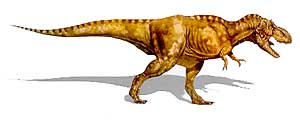
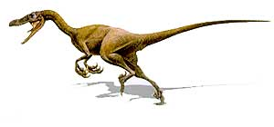
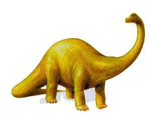
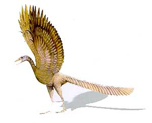
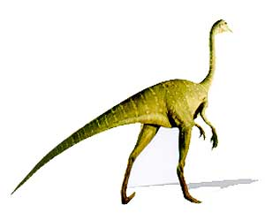
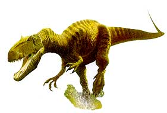

| DINOSAURIO | IMAGEN | ESPECIE | CARACTERISTICAS | TAMAÑO |
|---|---|---|---|---|
| T-REX |  |
Tyrannosaurus Rex | Era uno de los carnívoros más feroces | Medía de 10 a 14 metros de longitud y pesaba entre cuatro y siete toneladas |
| VELOCIRAPTOR |  |
Velociraptor Mongoliensis | Tenía el tamaño de un lobo actual y probablemente cazaba en grupo, lo que le permitía matar presas mucho más grandes que él | Medía hasta 1.8 metros de longitud y pesaba 15 kilogramos |
| DIPLODOCUS |  |
Diplodocus Longus | La dieta de este herbívoro pudo haber incluido hojas y frutos de árboles altos y arbustos, así como helechos y equisetos que crecían a nivel del suelo | Medía hasta 27 metros de largo y se calcula que pesaba 20 toneladas |
| ARQUEOPTERIX |  |
Archaeopterix Lithographica | Se le considera la primera ave. Es uno de los fósiles más importantes, porque aporta evidencias que apoyan la teoría de que las aves evolucionaron a partir de un antepasado que era dinosaurio | Medía aproximadamente 60 centímetros y pesaba 500 gramos |
| ORNITOMIMO |  |
Ornithomimus Velox | Se le asignó este nombre por su gran parecido a las aves modernas, como la avestruz | Medía tres metros de largo y pesaba hasta 150 kilogramos |
| ALOSAURIO |  |
Allosaurus Fragilis | Se caracteriza por las protuberancias que tiene delante de cada ojo | Medía aproximadamente 12 metros de largo y pesaba hasta dos toneladas |